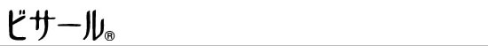

染色性に優れ多様な商品企画ニーズに対応する衣類資材
| |

| 項 目 |
内 容 |
|
ポリエステル（常圧易染ポリエステル糸） |
|
ビサール Ｂｉｓｅｒｌ |
|
本商品は、ポリマーの改質により常圧易染性を付与したポリエステル糸である。複雑な工程を要するポリウレタンやウール、絹などとの複合も後染加工が容易で風合いを損なうことがない。 |
|
淡中色なら１１０℃、極濃色でも１２０℃での染色を可能にした。 |
|
| (1) |
染色性に優れている。 |
| (2) |
易染性のため高温に耐えられないウール、シルク、アクリル等との交編交織品等の複合素材の商品化に適している。 |
| (3) |
低温常圧下でのプリント性がよく、なかでも抜染プリントがしやすい。 |
| (4) |
風合いが柔らかい。 |
| (5) |
レギュラーポリエステルに比べて吸水性に優れている。 |
|
|
| (1) |
スポーツ用途：水着、レオタード、スキーボトム等 |
| (2) |
アウター用途：スーツ、ブラウス等 |
|
|
| 銘柄 |
捲量（kg） |
| 84/36SBD |
5.75 |
 |
| 56/36BBD |
5.25 |
| 84/48BBD |
12.65 |
|

|
| |
| |
| |